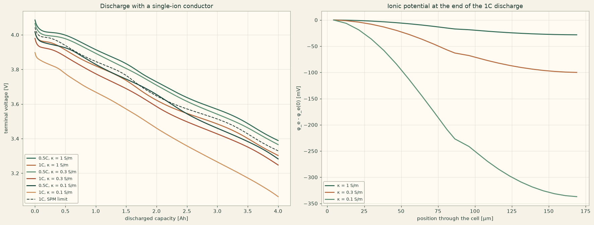

Docs › Examples › Lithium-ion cell with a single-ion conducting electrolyte
Batteries · 1D
Lithium-ion cell with a single-ion conducting electrolyte
An LG M50 cell whose liquid electrolyte is replaced by a single-ion conductor (transference number one) is discharged at two rates and three ionic conductivities.
Run locally with OneSimulation. The example downloads are free. Running them requires an activated runtime. Runtime Alpha 0.2.1a7 · CPython 3.13 on macOS (Apple Silicon), Ubuntu 22.04 (x86-64), and Windows x64. Installation and activation · View pilot plans. Scope of the reference checks.

What it computes
OneSimulation solves the Doyle-Fuller-Newman porous electrode model with a lithium transference number of one: the salt balance has no source and the electrolyte acts as a pure ionic resistor; a run with very high conductivities is compared with the single-particle model.
What it checks
The salt concentration stays exactly at 1000 mol/m^3, the high-conductivity model matches the single-particle model within 0.022 mV over a 1C discharge, and the voltage shifts of 20-119 mV stay below the one-third-rule ohmic estimate (ratio 0.92 at 0.3 S/m and 0.5C down to 0.69 at 0.1 S/m and 1C, as the reaction moves towards the separator).
The notebook
The complete notebook, cell by cell. Run it to produce the figures and the comparison printout.
Liquid electrolytes carry the current with both ions; the anions pile up at one electrode and deplete at the other, and the salt gradient limits the rate. Polymer and ceramic single-ion conductors fix the anions to the host, so the lithium transference number is \(t_+=1\). In the porous electrode (Doyle-Fuller-Newman) model the salt balance then has no source,
and the ionic current obeys Ohm's law, \(i_e=-\kappa_\mathrm{eff}\nabla\phi_e\), without the diffusion potential \(\propto(1-t_+)\nabla\ln c_e\). The electrodes, particles and kinetics are those of the LG M50 cell (graphite-SiOx | NMC811, 5 Ah, 25 °C) of Chen et al., J. Electrochem. Soc. 167 (2020) 080534; the electrolyte is replaced by a single-ion conductor of bulk conductivity \(\kappa\) = 1, 0.3 and 0.1 S/m with the Bruggeman correction \(\kappa_\mathrm{eff}=\kappa\varepsilon^{1.5}\).
Reference. (i) The salt concentration must stay at its initial value. (ii) For very high ionic and electronic conductivities the reaction is uniform through each electrode and the model reduces exactly to the single-particle model (SPM). (iii) If the reaction stayed uniform through the electrodes, lowering the conductivity would shift the voltage by the ohmic drop \(\Delta V=i\,\Delta R\) with \(R=\frac{L_-}{3\kappa_{\mathrm{eff},-}}+\frac{L_s}{\kappa_{\mathrm{eff},s}}+\frac{L_+}{3\kappa_{\mathrm{eff},+}}\), the classical one-third rule of a porous electrode with uniform reaction (J. Newman, K.E. Thomas-Alyea, Electrochemical Systems, 3rd ed., Wiley 2004, §22). It is the limit for a weak resistance and an upper bound otherwise, because a poorer conductor pulls the reaction towards the separator and shortens the ionic path.
import numpy as np
from onesim.physics.chemistry import (
BatteryElectrodeLayer,
BatteryElectrolyteLayer,
PorousElectrodeBattery,
)
from onesim.visualization import plots, theme
theme.set()Cell
The layers of the LG M50 cell; only the electrolyte conductivity changes. The salt diffusivity no longer matters at \(t_+=1\) and is kept at the liquid value.
faraday, area = 96485.33212, 0.1027
negative_ocp = lambda x, T: (
1.9793 * np.exp(-39.3631 * x)
+ 0.2482
- 0.0909 * np.tanh(29.8538 * (x - 0.1234))
- 0.04478 * np.tanh(14.9159 * (x - 0.2769))
- 0.0205 * np.tanh(30.4444 * (x - 0.6103))
)
positive_ocp = lambda y, T: (
4.4875
- 0.8090 * y
- 0.0428 * np.tanh(18.5138 * (y - 0.5542))
- 17.7326 * np.tanh(15.7890 * (y - 0.3117))
+ 17.5842 * np.tanh(15.9308 * (y - 0.3120))
)
porosity = {"negative": 0.25, "separator": 0.47, "positive": 0.335}
thickness = {"negative": 85.2e-6, "separator": 12e-6, "positive": 75.6e-6}
cell = lambda kappa, sigma=None: PorousElectrodeBattery(
negative=BatteryElectrodeLayer(
thickness=thickness["negative"],
porosity=porosity["negative"],
electrolyte_diffusivity=1.7694e-10 * 0.25**1.5,
electrolyte_conductivity=kappa * 0.25**1.5,
particle_radius=5.86e-6,
particle_diffusivity=3.3e-14,
active_fraction=0.75,
maximum_concentration=33133,
initial_stoichiometry=0.9014,
reference_exchange_current=6.48e-7 * np.sqrt(1000) * 33133 / 2,
electronic_conductivity=sigma or 215,
open_circuit_potential=negative_ocp,
),
separator=BatteryElectrolyteLayer(
thickness=thickness["separator"],
porosity=porosity["separator"],
electrolyte_diffusivity=1.7694e-10 * 0.47**1.5,
electrolyte_conductivity=kappa * 0.47**1.5,
),
positive=BatteryElectrodeLayer(
thickness=thickness["positive"],
porosity=porosity["positive"],
electrolyte_diffusivity=1.7694e-10 * 0.335**1.5,
electrolyte_conductivity=kappa * 0.335**1.5,
particle_radius=5.22e-6,
particle_diffusivity=4e-15,
active_fraction=0.665,
maximum_concentration=63104,
initial_stoichiometry=0.2661,
reference_exchange_current=3.42e-6 * np.sqrt(1000) * 63104 / 2,
electronic_conductivity=sigma or 0.18,
open_circuit_potential=positive_ocp,
),
electrolyte_concentration=1000,
transference_number=1.0,
)
resistance = lambda kappa: sum(
thickness[n] / ((1 if n == "separator" else 3) * kappa * porosity[n] ** 1.5)
for n in thickness
)
print(
"ohmic resistance of the electrolyte, uniform reaction: "
+ ", ".join(
f"kappa = {k:g} S/m: {resistance(k) * 1e4:.2f} Ohm cm²" for k in (1.0, 0.3, 0.1)
)
)Discharges
Each discharge covers 80 % of the nominal capacity at 0.5C and 1C, for the three conductivities, with the full porous electrode model. A fourth run at 1C with conductivities of \(10^3\) S/m in both phases is compared with the single-particle model.
one_c = 5.0 / area
runs = {
(kappa, rate): cell(kappa).solve(
mode="DFN",
current_density=rate * one_c,
final_time=0.8 * 3600 / rate,
radial_cells=16,
through_cells=(10, 5, 10),
output_times=np.linspace(0, 0.8 * 3600 / rate, 241),
)
for kappa in (1.0, 0.3, 0.1)
for rate in (0.5, 1.0)
}
ideal = cell(1e3, sigma=1e3)
limit = {
mode: ideal.solve(
mode=mode,
current_density=one_c,
final_time=0.8 * 3600,
radial_cells=16,
through_cells=(10, 5, 10),
output_times=np.linspace(0, 0.8 * 3600, 241),
)
for mode in ("DFN", "SPM")
}Comparison with the references
The largest relative deviation of the salt concentration from 1000 mol/m³, the high-conductivity model against the SPM, and the voltage shift at the first output time (12 s at 1C) against the ohmic estimate.
print(
f"largest |c_e - c_e0| / c_e0 over all runs: {max(np.abs(run.electrolyte_concentration / 1000 - 1).max() for run in runs.values()):.1e}"
)
print(
f"high conductivities: largest |V_DFN - V_SPM| = {1e3 * np.abs(limit['DFN'].terminal_voltage - limit['SPM'].terminal_voltage).max():.3f} mV over the 1C discharge"
)
print(
f"{'C-rate':>6s} {'kappa':>6s} {'V(t1) [V]':>10s} {'V_end [V]':>10s} {'shift vs 1 S/m [mV]':>20s} {'one-third rule [mV]':>20s} {'ratio':>6s}"
)
for (kappa, rate), run in runs.items():
shift = 1e3 * (runs[1.0, rate].terminal_voltage[1] - run.terminal_voltage[1])
estimate = 1e3 * rate * one_c * (resistance(kappa) - resistance(1.0))
print(
f"{rate:6.1f} {kappa:6.1f} {run.terminal_voltage[1]:10.4f} {run.terminal_voltage[-1]:10.4f} {shift:20.1f} {estimate:20.1f} "
f"{shift / estimate if estimate else 1.0:6.2f}"
)Figure
The discharge curves of all runs, and the ionic potential through the cell at the end of the 1C discharge for the three conductivities.
capacity = lambda rate, run: 5.0 * rate * run.times / 3600
fig = plots.figure(1, 2, size=(16, 6))
plots.line(
y={
f"{rate:g}C, κ = {kappa:g} S/m": (capacity(rate, run), run.terminal_voltage)
for (kappa, rate), run in runs.items()
},
reference={
"1C, SPM limit": (capacity(1.0, limit["SPM"]), limit["SPM"].terminal_voltage)
},
xlabel="discharged capacity [Ah]",
ylabel="terminal voltage [V]",
title="Discharge with a single-ion conductor",
legend="lower left",
ax=fig[0],
)
plots.line(
y={
f"κ = {kappa:g} S/m": (
runs[kappa, 1.0].electrolyte_positions * 1e6,
1e3
* (
runs[kappa, 1.0].electrolyte_potential[-1]
- runs[kappa, 1.0].electrolyte_potential[-1][0]
),
)
for kappa in (1.0, 0.3, 0.1)
},
xlabel="position through the cell [µm]",
ylabel="φ_e - φ_e(0) [mV]",
title="Ionic potential at the end of the 1C discharge",
legend="lower left",
ax=fig[1],
)
plots.show()Going further
Set \(t_+\) back to the liquid value 0.26 at the same conductivity: the salt gradient adds the concentration overpotential and cuts the capacity at high rates. Thicker electrodes show where the low conductivity of solid electrolytes concentrates the reaction near the separator.